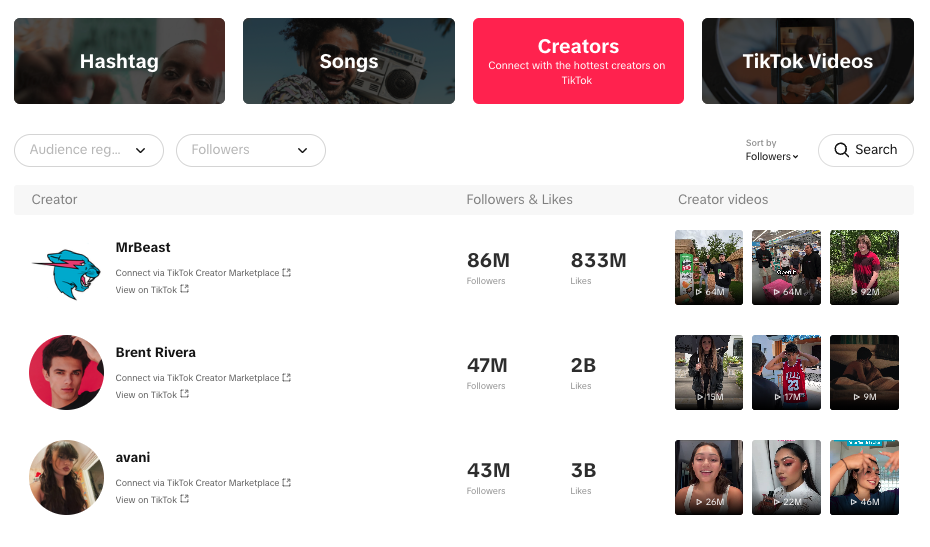

Viral Vision
Mantiene a disposición los reportes enfocados en los análisis predictivos
de tendencias y comportamientos en la plataforma TikTok administrado por el área de
mercadeo. Utilizando la API oficial de TikTok, ViralVision permite acceder a datos de
contenido y usuarios, con el fin de identificar patrones, predecir la viralidad de publicaciones y
optimizar estrategias de marketing digital. Esta herramienta está diseñada para ayudar a
creadores de contenido y marcas a maximizar su impacto en la plataforma, tomando
decisiones basadas en datos y análisis avanzados.
